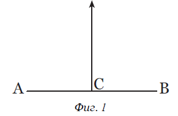
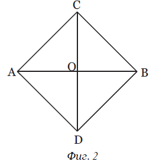

Беседа 1132 от 3877 · Беинса Дуно
Светлият кръг
Само светлият път на Мъдростта води към Истината.
Тя постоянно ни весели.

Коя е причината за препятствията в живота? Преди всичко препятствия съществуват в материалния свят, където възможностите са ограничени; когато казваме, че възможностите на човека са ограничени, имаме предвид материалния живот, в който идеите не се реализират мигновено, както в Идейния свят - в Идейния свят човек може в един момент да стане милиардер, цар, божество, но дойде ли до реализиране на тия идеи, нужно е време. При сегашните условия на живота невъзможно е всички хора да станат царе, но през вечността всички имат възможност да постигнат идеалите си. Понеже в един живот човек не може да реализира желанията си, затова са предвидени много съществувания; много пъти ще дохожда човек на Земята, докато реализира своите желания и се усъвършенства.
И тъй, за да реализира една своя идея, човек трябва да разполага с известни условия. Например ако иска в даден момент да си ушие копринена дреха, той трябва да има на разположение коприна - как ще реализира идеята си, ако страната, в която живее, не произвежда коприна? В Идейния свят човек лесно може да има копринена дреха, но в материалния свят не може да я реализира. - „Ама аз искам да имам копринена дреха." Как ще искате от хората това, което те не са в състояние да направят? В Идейния свят човек може да бъде милостив, любещ, добродетелен, но ако рече да се прояви такъв, какъвто желае, ще види, че не може; колкото и да желае, в един и същ момент човек не може да обича всички хора - в даден момент той може да обича само едно лице и щом обича един, той не може едновременно да обича всички хора.
Като ученици, вие трябва да се стремите към Цялото, към Бога, в Когото се включват всички живи същества; обичате ли Бога, ще обичате и Неговите части. Отправете всичката си Любов и всичкото си внимание към дървото, а не към неговите листа и клони - от благосъстоянието на цялото дърво зависи благосъстоянието на всеки лист и клон.
Възлюбете Живота - това е задачата на всеки човек. Всеки може да възлюби Живота, но никой не може да го придобие - защо? Защото Животът му е даден вече, няма защо да го придобива. Има неща, които човек трябва да придобие, но за тях се искат време, усилие и труд. Малко е житното зърно, но милиони работници работят в неговата лаборатория, докато го извадят на бял свят; малки, светли точки са Божествените мисли, но за реализирането на една такава мисъл са нужни милиарди работници. Човек се е родил на Земята, но колко работници са чукали върху него, за да се яви днес в човешка форма! Първоначално човек е съществувал като идея в ума на Бога, докато е дошъл денят на неговото проявление.
Същото може да се каже и за идеите. Всяка идея може да се реализира на Земята само когато слезе от Идейния свят - докато е в Идейния свят, тя храни само ума на човека; щом се оформи и отдели от другите идеи, слиза на Земята, като запазва основата си неизменна и така се реализира. В даден момент човек може да реализира само една идея; докато държи в ума си две идеи върху един въпрос, той не може да реализира нито една от тях. Например човек може да се храни само по един начин - чрез устата; стане ли Ангел, той може да се храни пак по един начин - чрез порите на тялото си. И човек се храни чрез порите, но несъзнателно; порите възприемат прана от въздуха и по този начин обновяват организма. За да се реализира една идея, тя трябва да мине през подсъзнанието или през свръхсъзнанието - там идеята узрява и излиза на бял свят, готова за реализиране. Подсъзнанието крие в себе си живота на миналото, там са складирани опитностите на човека; достатъчно е човек да напрегне мисълта си, да се концентрира, за да извади нещо от склада на своето далечно минало.
Всеки човек трябва да работи върху концентриране на мисълта си; не работи ли доброволно, насила ще го заставят. Великите хора се отличават с голяма концентрация на мисълта си; за да я постигнат, те са минали през големи страдания и тежка дисциплина. За да напише едно велико произведение, писателят е минал през такава дисциплина, каквато обикновеният човек не подозира. Вие четете например романа Възкресение от Толстой, но не знаете кое го е заставило да напише този роман. Кога може да възкръсне човек - когато поправи своето минало.
Като работи върху самовъзпитанието си, човек трябва да се стреми към чистота. Няма по-красиво нещо на физическия свят от чистотата; да бъдеш чист на Земята, това значи да живееш в Рая. Чистотата е свързана със здравето; чистият външно и вътрешно човек е абсолютно здрав. За да бъдете здрави и да запазите чистотата си, не увеличавайте тежестта на желанията си - всяко желание има определена тежест и колкото по-ниско е, толкова по-голяма е неговата тежест.
Следователно искате ли да запазите чистотата на сърцето си, не дръжте в ума си две разбирания за живота, за науката, за Природата. Стремете се към добър живот и права мисъл; добрият живот носи топлина за сърцето, а правата мисъл носи светлина за ума. Четете ли нещо, не бързайте да се произнасяте, че нищо не струва; кажете в себе си, че тази форма на изказване на мисълта не е още завършена. Каквато и да е формата на дадено произведение, то все ще може да трансформира енергиите на някой човек. Формите на всички извори, скъпоценни камъни, животни могат да трансформират енергиите на човека; има автори - писатели, музиканти, художници, които са в състояние да трансформират човешките енергии. Като знаете това, отдавайте на всеки човек, на всяко живо същество такова внимание и почитание, каквото и на себе си - това е правило, което трябва да се спазва при самовъзпитанието. Самовъзпитанието има за цел да организира силите на човека. Мъчно се постига организиране на човешките сили и ако отделният човек мъчно се организира, колко по-мъчно ще бъде организирането на обществото. Обществото не е механически сбор на същества, но органически, със строго определени интереси - материални, умствени, духовни; кой каквито интереси има, трябва да ги реализира - не ги ли реализира, той ще се подпуши. Някой има интерес към научни въпроси, друг - към изкуствата, някои се занимават с окултни науки, изучават щастливите числа в живота. Всеки момент от времето е свързан с щастливо или с нещастно число и от съчетанието на силите в човека зависи в кой от двата момента ще попадне - в щастливия или в нещастния. За да хармонизира силите на своя организъм, човек се нуждае от Вяра.

Желая всички да образувате този светъл кръг около себе си и да бъдете внимателни, да не подпушвате енергиите си - по този начин ще бъдете защитени от бурите на живота. Това значи да се свърже човек с добрите влияния на планетите.
Само светлият път на Мъдростта води към Истината.
Тя постоянно ни весели.